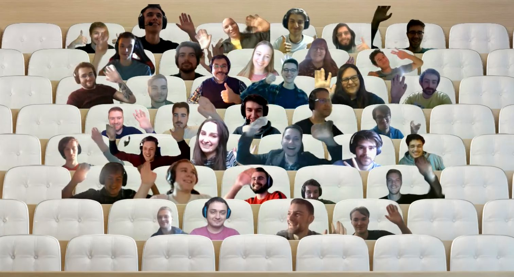
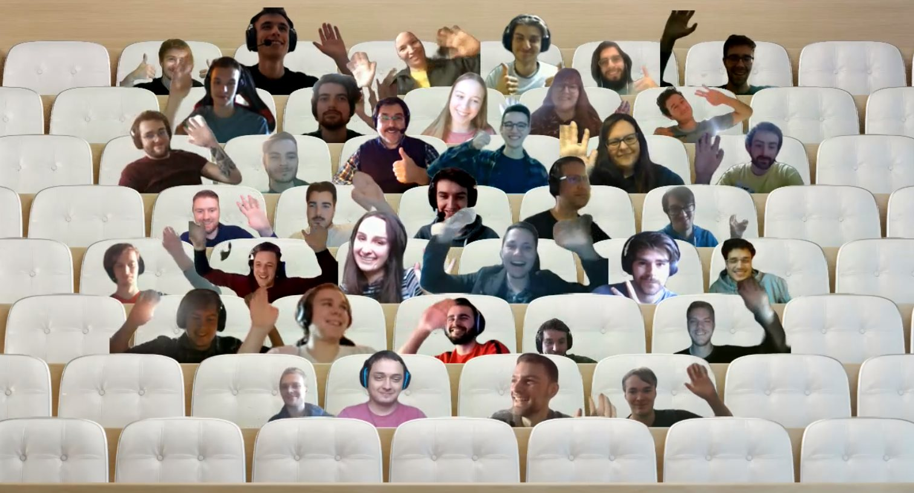

Overzicht activiteiten
Een overzicht van alle activiteiten
Dit onderdeel bevat een overzicht van alle activiteiten waaronder zeven seminaries, twee innovaties, drie POP-sessies en drie extra’s.
Seminaries
Capgemini – Introduction to testing, Continuous testing, Unit testing and TDD
Het seminarie van Capgemini draaide volledig rond unit testing en test driven development. Ik leerde hierbij over wat het allemaal is en waarom en hoe het wordt gebruikt. Deze leerstof werd aangeleerd door het oplossen van basis oefeningen en oplossingen op problemen voor te stellen.
- Locatie activiteit: bedrijf, plaats:
- Dit seminarie werd gegeven door Capgemini.
- Hogeschool PXL, lokaal B241.
- Datum en duur van de activiteit:
- Woensdag 18 februari 2020 van 09:00u-12:00u.
- X-Factor domein: multi-en disciplinariteit
- Zelfaangebrachte/extra activiteit? Nee
Evance – De wondere wereld van Firebase
Het bedrijf Evance gaf vervolgens een seminarie over Firebase. Firebase maakt het bouwen van kleine applicaties net iets gemakkelijker door enkele handige tools aan te bieden zoals analytics, realtime messaging, monitoring, data-opslag, data-hosting, … In dit seminarie kon je meevolgen met de spreker om zo een kleine chatapplicatie op te zetten.
- Locatie activiteit: bedrijf, plaats:
- Dit seminarie werd gegeven door Evance.
- Hogeschool PXL, lokaal B151.
- Datum en duur van de activiteit:
- Woensdag 25 februari 2020 van 09:00u-12:00u.
- X-Factor domein: multi-en disciplinariteit
- Zelfaangebrachte/extra activiteit? Nee
Eurofins - Basis Agile workshop
In dit seminarie gaf Sophie Brams een workshop over de basisprincipes van Agile en Scrum. Na een presentatie met de theorie mochten wij zelf aan de slag met legoblokken om deze principes toe te passen.
- Locatie activiteit: bedrijf, plaats:
- Dit seminarie werd gegeven door Eurofins.
- Hogeschool PXL, lokaal EG514.
- Datum en duur van de activiteit:
- Woensdag 10 maart 2020 van 08:30u-12:00u.
- X-Factor domein: multi-en disciplinariteit
- Zelfaangebrachte/extra activiteit? Nee

Settlemint - Blockchain deel 1
Het seminarie van Settlemint bestond uit twee delen. In deel één gaf Matthew Van Niekerk een intro tot Blockchain en daarna een demo met enkele use cases. Hierna vertelde Vincent Bultot meer over de cross roads van Internet of Things (IoT), artificiële intelligentie en Blockchain.
- Locatie activiteit: bedrijf, plaats:
- Dit seminarie werd gegeven door Settlemint.
- Hogeschool PXL, lokaal B134.
- Datum en duur van de activiteit:
- Woensdag 21 oktober 2020 van 09:00u-12:00u.
- X-Factor domein: multi-en disciplinariteit
- Zelfaangebrachte/extra activiteit? Nee
Settlemint - Blockchain deel 2
Het tweede deel van het Settlemint-seminarie over Blockchain ging vooral over self sovereign identity. Deze uitleg werd gegeven door Matthew van Nienkerk met daarbij een demonstratie. Om af te sluiten gaf Steven Palmaers een introductie tot PXL SSI initiative.
- Locatie activiteit: bedrijf, plaats:
- Dit seminarie werd gegeven door Settlemint.
- Hogeschool PXL, student hub.
- Datum en duur van de activiteit:
- Woensdag 28 oktober van 09:00u-12:00u.
- X-Factor domein: multi-en disciplinariteit
- Zelfaangebrachte/extra activiteit? Nee
Axxes – Development met en voor Docker
Jesse Verbruggen van het bedrijf Axxes gaf het seminarie over Docker met daarbij een uitgebreide toepassing. In deze toepassing moesten we in een startproject Docker implementeren.
- Locatie activiteit: bedrijf, plaats:
- Dit seminarie werd gegeven door Axxes.
- Online, Microsoft Teams-meeting.
- Datum en duur van de activiteit:
- Woensdag 25 november 2020 van 09:00u-12:00u.
- X-Factor domein: multi-en disciplinariteit
- Zelfaangebrachte/extra activiteit? Nee
RCCU - Uitdagingen in de wereld van e-forensics & cybercrime
Het seminarie van de politie Regionale Computer Crime Unit (RCCU) ging over de taak van computer crime units bij de federale gerechtelijke politie met bijkomende uitdagingen zoals een stijgende hoeveelheid aan data en de snelle evolutie van technologieën zoals Blockchain en IoT.
- Locatie activiteit: bedrijf, plaats:
- Dit seminarie werd gegeven door de politie (Regionale Computer Crime Unit).
- Online, Microsoft Teams-meeting.
- Datum en duur van de activiteit:
- Woensdag 16 december 2020 van 09:00u-12:00u.
- X-Factor domein: multi-en disciplinariteit
- Zelfaangebrachte/extra activiteit? Nee
Innovatie
Innovatieroute – Low Code
Voor de innovatieroute koos ik voor Low Code. Low Code draait volledig rond taalonafhankelijke applicaties maken op een hoog tempo. In deze sessie maakten we kennis met de verschillende mogelijkheden met Low Code door samen een eenvoudige applicatie op te zetten.
- Locatie activiteit: bedrijf, plaats:
- Dit seminarie werd gegeven door Grasshoppers Academy, IAdvise en Brightfox.
- Hogeschool PXL, lokaal G118.
- Datum en duur van de activiteit:
- Donderdag 8 oktober 2020 van 09:00-17:00u.
- Vrijdag 9 oktober 2020 9/10 van 09:00-13:00u.
- X-Factor domein: ondernemend en innovatief
- Zelfaangebrachte/extra activiteit? Nee
Hackaton Sint-Oda
Voor de hackaton nam ik deel aan die van Sint-Oda. Hierbij moesten we een game creëren voor mensen met een meervoudige beperking. Ons team bestond uit zowel AON als SWM-studenten en samen hebben we een prototype voor een herfst-game ontwikkeld die later uitgetest werd op de bewoners.
- Locatie activiteit: bedrijf, plaats:
- Dit seminarie werd gegeven vanuit Sint-Oda en enkele studenten ergotherapie.
- Online, Microsoft Teams-meeting.
- Datum en duur van de activiteit:
- Dinsdag 23 en woensdag 24 februari 2020 van 09:00-17:00u.
- X-Factor domein: ondernemend en innovatief
- Zelfaangebrachte/extra activiteit? Nee
.png) 

POP-sessies
Brein aan het werk, niet storen!
In deze POP-sessie gingen we op zoek naar manieren waarop je het beste kunt focussen op hetgeen wat belangrijk is. Ik leerde mezelf beter kennen door te zoeken naar factoren die me afleiden van het belangrijke.
- Locatie activiteit:
- Hogeschool PXL, lokaal B241.
- Datum en duur van de activiteit:
- Dinsdag 25 februari 2020 van 10:30u-12:30u.
- X-Factor domein: (em)passie
- Zelfaangebrachte/extra activiteit? Nee
POPing
POPping draaide volledig rond het creëren van een juist zelfbeeld. Mensen die dit juiste beeld hebben over zichzelf staan veerkrachtiger in hun job, zijn minder snel uitgeblust en hebben meer zelfvertrouwen.
- Locatie activiteit:
- Hogeschool PXL lokaal B241.
- Datum en duur van de activiteit:
- Dinsdag 3 maart 2020 van 10:30u-12:30u.
- X-Factor domein: (em)passie
- Zelfaangebrachte/extra activiteit? Nee
Feedback: the key to improvement
Learning Path gaf deze interessante sessie over het verschil tussen opbouwende en afbrekende feedback en het belang van juiste feedback geven.
- Locatie activiteit: bedrijf, plaats:
- Deze sessie werd gegeven door Learning Path.
- Hogeschool PXL.
- Datum en duur van de activiteit:
- Woensdag 12 februari 2020 van 15:30u-17:30u.
- X-Factor domein: (em)passie
- Zelfaangebrachte/extra activiteit? Nee
Extra's
Cursus React Udemy
- Locatie activiteit: bedrijf, plaats:
- Online Udemy.
- Datum en duur van de activiteit:
- x uur.
- X-Factor domein: ondernemend en innovatief
- Zelfaangebrachte/extra activiteit? Ja
Cursus RegEx Udemy
- Locatie activiteit: bedrijf, plaats:
- Online Udemy.
- Datum en duur van de activiteit:
- x uur.
- X-Factor domein: ondernemend en innovatief
- Zelfaangebrachte/extra activiteit? Ja
Unity Game portfoliovoorstelling
- Locatie activiteit: bedrijf, plaats:
- Online.
- Datum en duur van de activiteit:
- x uur.
- X-Factor domein: ondernemend en innovatief
- Zelfaangebrachte/extra activiteit? Ja